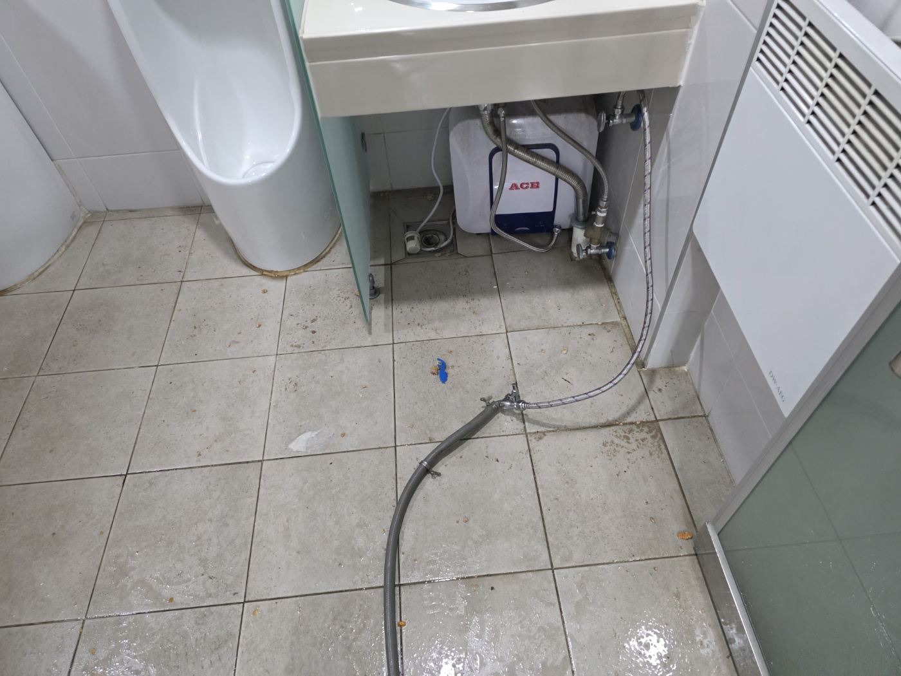
안녕하세요.. 고고고 설비입니다.. 오늘은 안성시 안성동에 있는 상가 건물에서 하수구막힘 신고를 받고 다녀온 현장입니다.
먼저 실내 화장실 바닥 배관부터 확인했는데, 특별한 이상은 없어서 건물 외부 마당 쪽 맨홀로 이동해 원인을 찾기 시작했습니다.
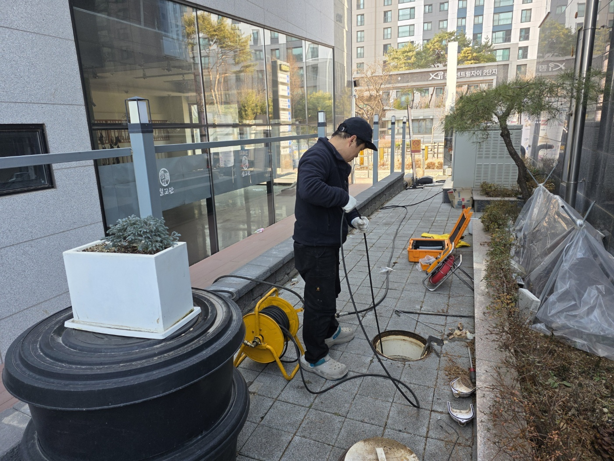
맨홀 뚜껑을 열어보니 그리스트랩 거름망 틈새에 자잘한 돌덩이와 이물질이 잔뜩 끼어있었습니다. 이게 배수 흐름을 막고 있던 원인 중 하나였어요.
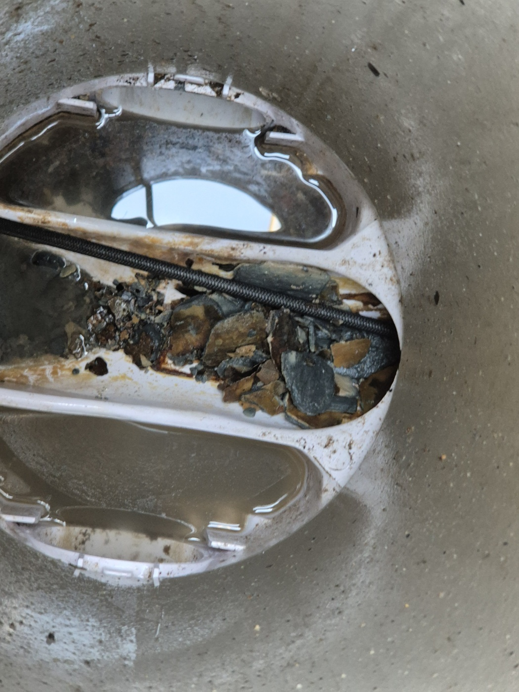
맨홀 안쪽으로 전동 와이어 케이블을 밀어 넣어 배관 내부를 훑어가며 작업을 진행했습니다.
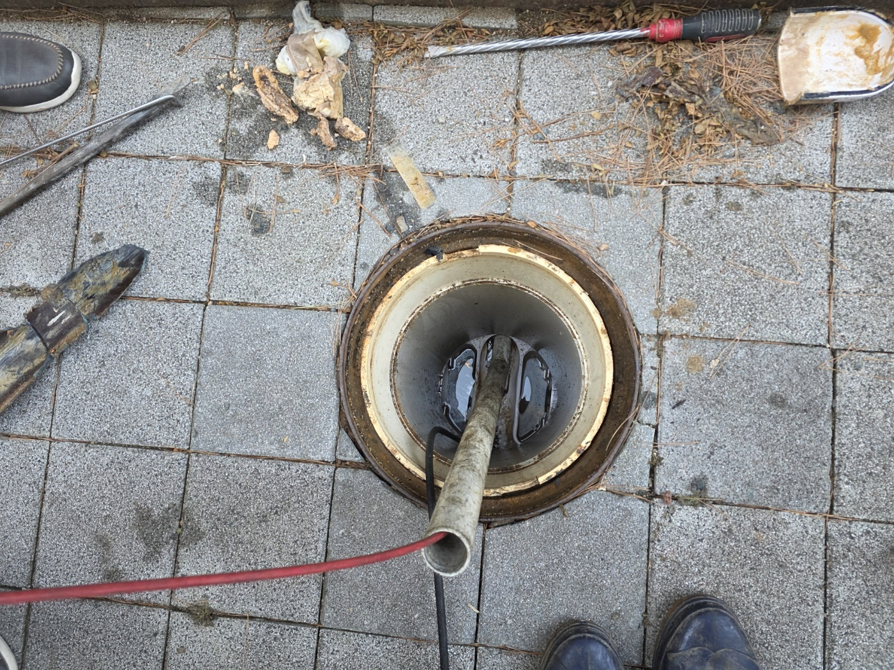
내시경으로도 안쪽 상태를 함께 확인하면서 진행했어요.
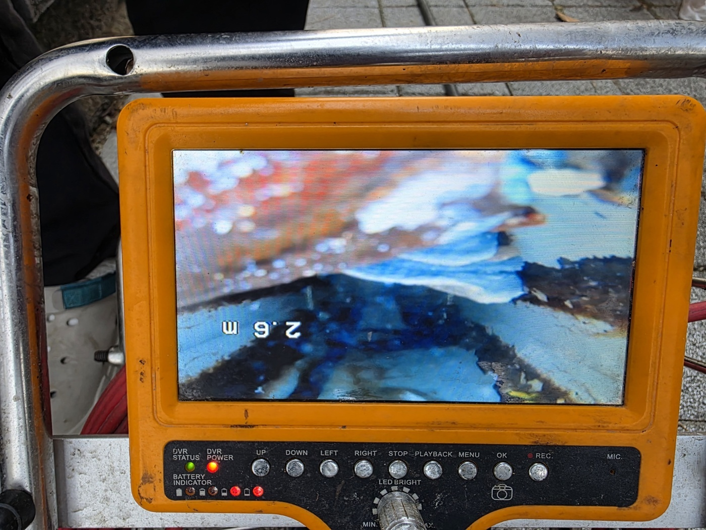
상가 건물은 배관 라인이 여러 갈래로 나뉘어 있어서, 다른 위치의 맨홀 뚜껑도 열어 함께 확인했습니다.
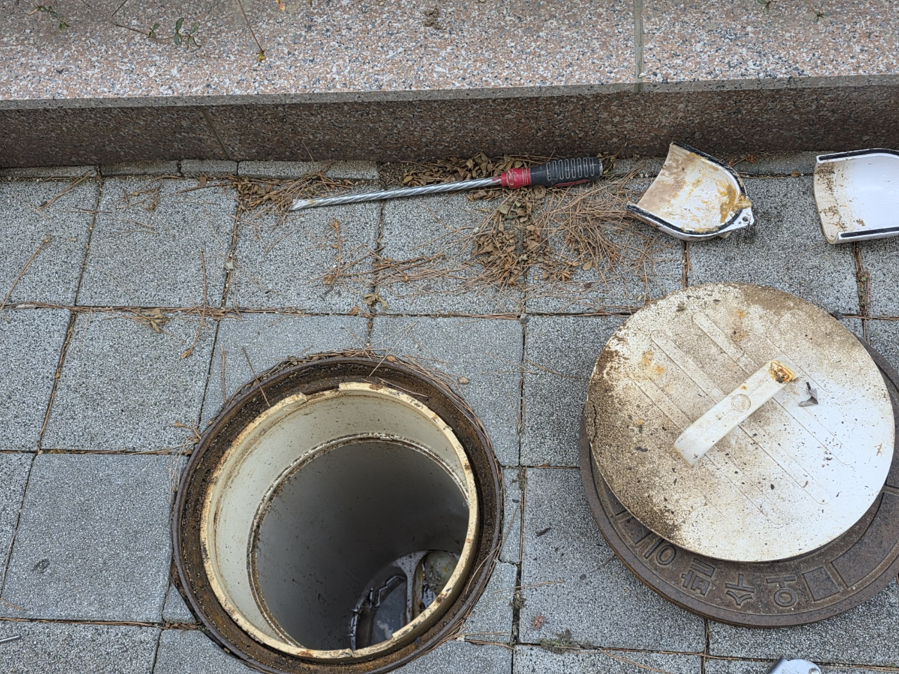
이쪽 그리스트랩 거름망에도 찌든 이물질이 두껍게 붙어있었어요.
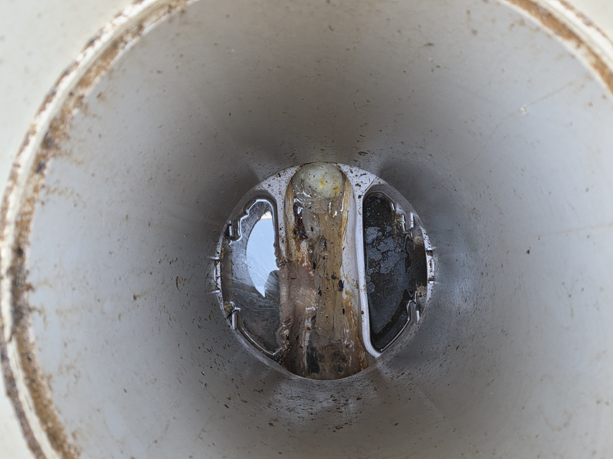
공구로 배관 연결부를 하나씩 분리해가며 안쪽까지 손을 넣어 이물질을 긁어냈습니다.
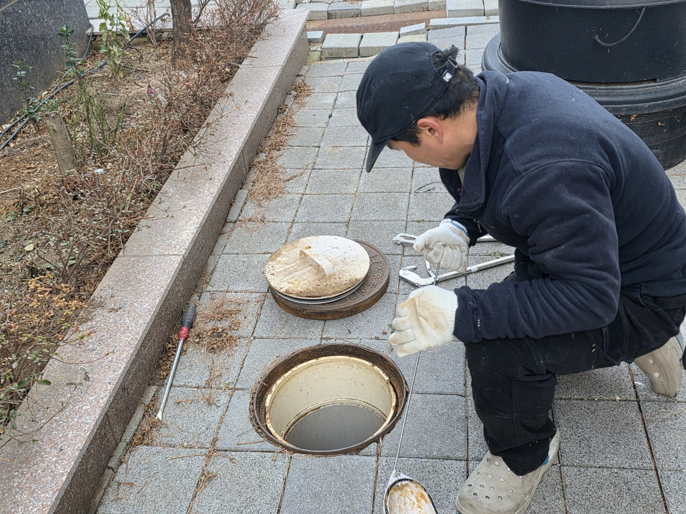
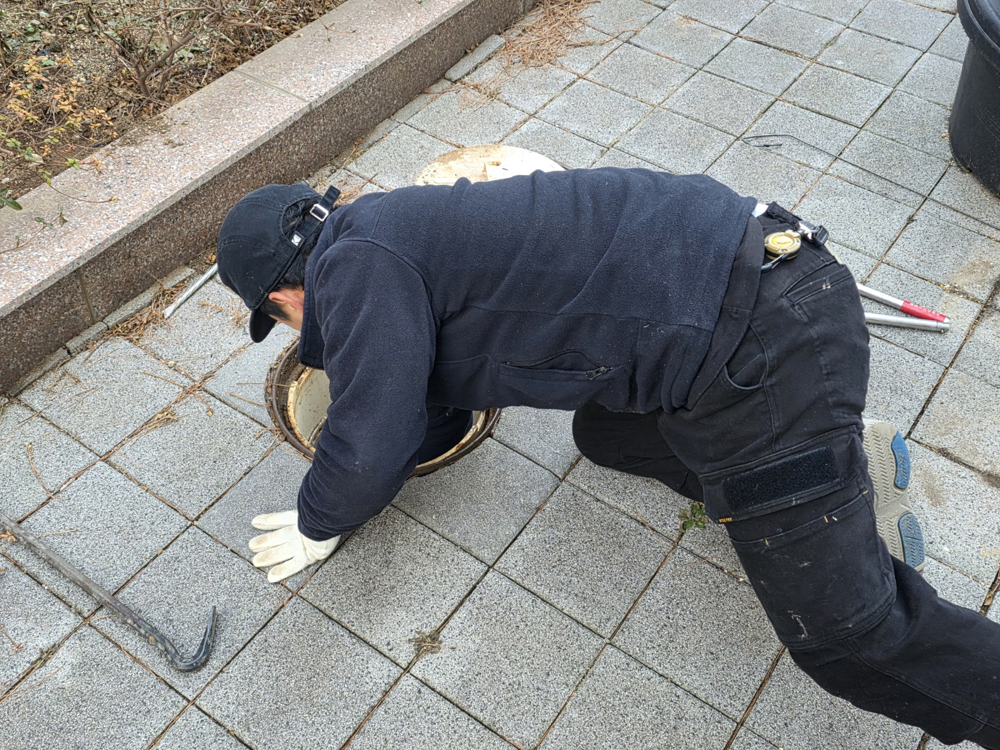
긁어낸 돌덩이와 굳은 찌꺼기, 배관 안에서 나온 길게 눌어붙은 스케일 덩어리까지 한눈에 보일 정도로 양이 상당했습니다.
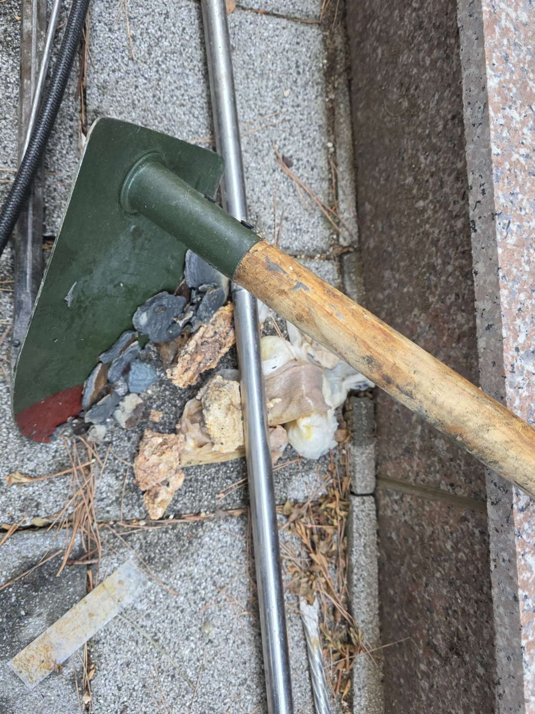
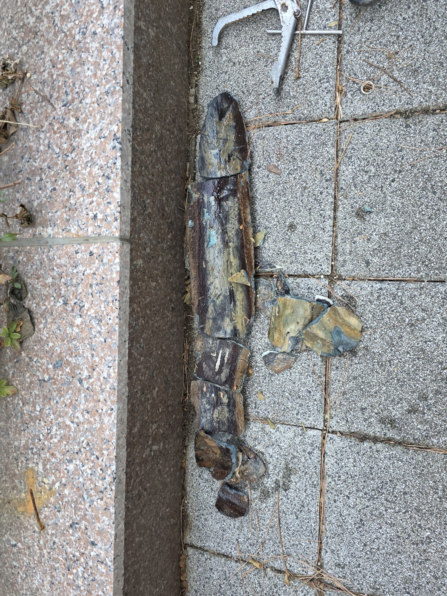
모든 지점 작업을 마치고 그리스트랩을 정리한 뒤 물을 내려 정상적으로 배수되는 걸 확인하고 작업을 마쳤습니다.
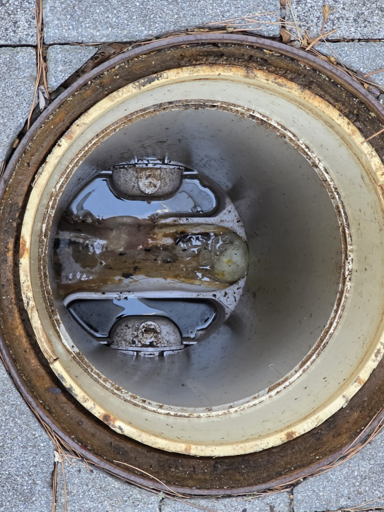
상가 건물은 여러 세대·업장이 함께 쓰는 배관이 많아서, 그리스트랩과 맨홀을 주기적으로 확인해주시는 게 막힘 재발을 줄이는 데 도움이 됩니다.
고고고 설비는 주택, 아파트, 원룸, 상가, 공장의 생활 하수 오수 배관을 관리해 주는 업체입니다. 고고고 설비에 전화 주시면 친절상담 정확한 진단 확실한 해결로 보답해 드리겠습니다!!